124M Llama · 真实优化器状态量化
RTX 4060 | 18 种算法变体 | 88 个配置 | 每配置 500 步 | 单种子 0
88/88 完成0 失败8.192M 每配置处理 token18.94 h 各配置记录耗时合计
先看结论
第一批完整训练建议选择 Lion L0/L2、Signum L0/L2、CAdamW A0/A3/A6、ADOPT A0/A3/A6、SF-AdamW S0/S2，共 12 条轨迹。若预算只够 6 条，先做 Lion L0/L2、CAdamW A0/A6、ADOPT A0/A6；A3 是后续隔离动量量化影响的消融。
这是基于压缩收益、相对 FP32 对照的数值偏移及实验多样性的研究优先级，不是跨优化器排名。每组都需保留自身 FP32 对照。AdEMAMix A6、MARS-Lion L2、MARS-AdamW A6、SophiaG H6、Muon 系列 BF16 和 SOAP A3 值得第二批验证。
500 步只到 3000 步学习率 warmup 的 1/6；验证集只有固定 32×512=16,384 token，记录 200/400/500 三个点，没有多种子方差，不能宣布收敛更好或统计显著。建议完整训练的候选先在 3000/5000 步复核，更大的固定验证集和至少 3 个种子可用于最终确认。SF-AdamW 使用内部调度；SoftEQ 需跨过 2000 步算法切换。
哪些配置值得继续
P1：第一批完整训练候选；P2：先延长至 3000–5000 步再决定；P3：低优先级。列表中的 L0/A0/H0/S0 都是各自对照，不能互换。
| 优先级 | 优化器 | 建议对照组合 | 依据 |
|---|
| P1 | lion | L0 / L2 | FP8 动量；状态收益大，三个验证点的最大劣化仅约 0.005。 |
| P1 | signum | L0 / L2 | FP8 动量；状态收益大，本轮耗时变化较小。 |
| P1 | cadamw | A0 / A3 / A6 | A3 保留 FP32 二阶状态作机制对照；A6 同时压缩 m/v，三个验证点均更低。 |
| P1 | adopt | A0 / A3 / A6 | A6 三个验证点均更低；A3 用于隔离动量和二阶状态量化的影响。 |
| P2 | ademamix | A0 / A3 / A6 | 双 FP8 值得扩展；慢速 EMA 未量化，因此总状态节省约 49.5%。 |
| P2 | adamw-magma | A0 / A3 / A6 | A6 loss 接近或低于对照；本轮耗时增加约 9%，先复测。 |
| P1 | sf-adamw | S0 / S2 | 保持 z 为 FP32，仅量化 v；S3/S4 的 z BF16 暂不推进。 |
| P2 | prodigy | A0 / A3 / A5 | 优先保留 v 的 FP32/BF16；v FP8 的 A4/A6 有一致劣化。 |
| P2 | mars-adamw | A0 / A4 / A6 | A6 压缩收益较大；A4 在三个验证点均更低，可作 v 量化消融。 |
| P2 | mars-lion | L0 / L2 | FP8 动量可继续；保留的历史梯度及辅助状态限制总显存收益。 |
| P3 | mars-shampoo | L0 / L1 | BF16 接近对照；FP8 在三个验证点均变差，暂缓 L2。 |
| P2 | sophiag | H0 / H6 | H6 状态节省大，但量化配置最终 loss 均略高；先过 3000 步。 |
| P2 | muon | L0 / L1 / L2 | BF16 几乎贴合对照；FP8 有小幅偏移，先验证越过 LR warmup。 |
| P2 | d-muon | L0 / L1 / L2 | BF16 接近对照；FP8 的早期劣化更明显，暂作扩展候选。 |
| P2 | muon-magma | L0 / L1 | BF16 接近对照；FP8 三个验证点均较差，完整训练优先级低。 |
| P2 | softeq-k2000-muon | L0 / L1 / L2 | BF16 接近对照；需跨过第 2000 步算法切换后再确认 FP8。 |
| P2 | soap | A0 / A3 | 优先只量化 m；v FP8 的 A4/A6 有劣化，A5/A6 耗时需复测。 |
| P2 | newton-muon | L0 / L1 / L2 | BF16 几乎重合；FP8 小幅变差；本轮负耗时增幅不视为加速结论。 |
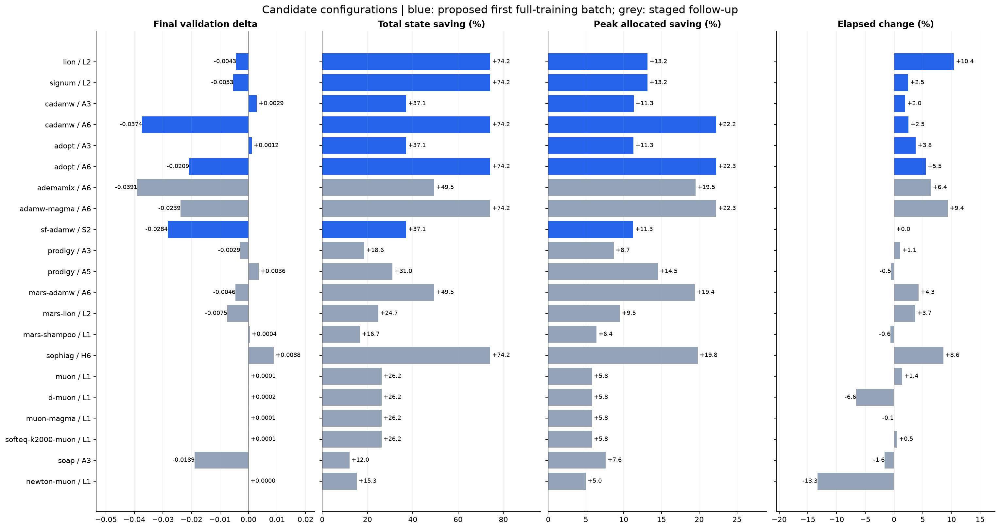
完整训练是后续建议，本分析没有启动新的训练。
量化数值影响
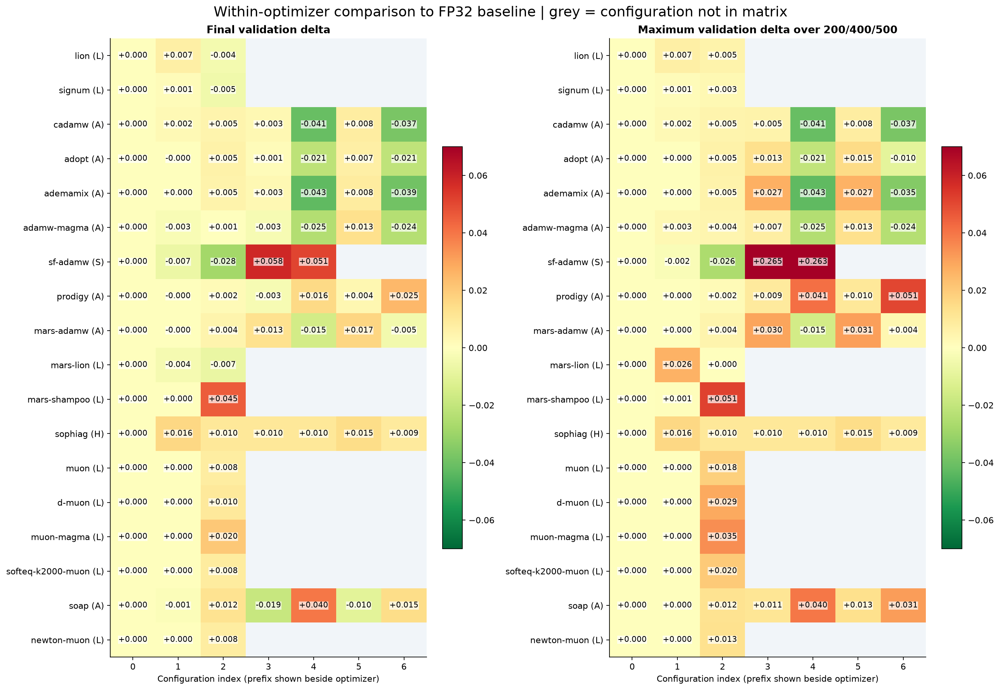
正值表示比同优化器 FP32 对照更差。颜色截断在 ±0.07，格内数字保留真实值（例如 SF-AdamW 的 z BF16 早期偏移达到 +0.26）。“最大差异”取三个验证点的最大值，不是置信上界。
- CAdamW、ADOPT、AdEMAMix、AdamW-Magma 的 v FP8（A4/A6）在三个验证点均低于对照。这是可复现验证的假设，可能涉及量化对更新尺度的影响，不能直接解释成更好泛化。
- SF-AdamW S3/S4（z BF16）三个点均劣化，最终 +0.0584/+0.0512；优先 S2（z FP32、v FP8）。
- Prodigy A4/A6、SOAP A4/A6、MARS-Shampoo L2、Muon-Magma L2 三个验证点都更差，暂不优先完整训练。
- Muon、D-Muon、Muon-Magma、SoftEQ、Newton-Muon 的 BF16 最终差异非常小；FP8 在三次验证均出现小幅正偏移，需跨越 warmup 验证。
- SophiaG H6 最终 +0.00884，全部状态节省约 74.2%，峰值节省约 19.8%；收益明显但不能将劣化忽略。
显存与耗时
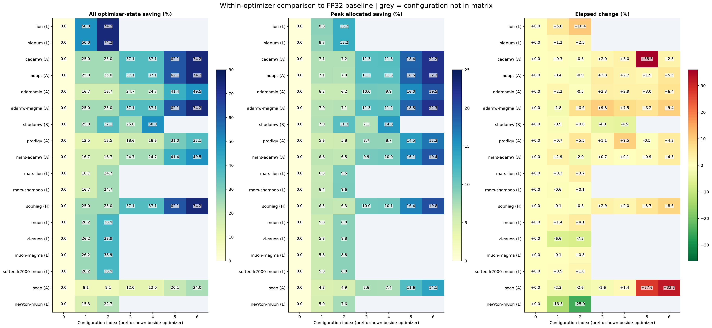
状态字节来自 state_inventory 的 payload+metadata（含 FP8 scales），总状态包含未量化辅助状态；峰值是 PyTorch max_memory_allocated，不是 nvidia-smi 整卡占用。每组图的 selected states、all states 和 peak 是三个不同口径，不能相加。reserved 单独保留在明细 JSON/CSV。
Lion/Signum FP8 的总状态节省约 74.2%，总峰值只下降约 13.2%。AdEMAMix/MARS 受未量化辅助状态影响；SOAP A6 总状态约节省 24.0%、峰值约 14.1%。因此只报动量压缩倍数会夸大整体收益。
耗时包含训练、3 次验证和 250/500 步检查点保存，未包含模型初始化与实验间绘图。每配置仅一次、顺序运行，未控制温度/后台负载/磁盘，不能把负耗时变化当成确定加速。CAdamW A5 +35.5%、SOAP A5/A6 +27.6%/+32.3%、Newton-Muon L2 −25.0% 都应在交错顺序的重复纯训练计时中复测；本报告保留实测值，不删除异常。
逐优化器六图与明细
训练 loss 使用尾随 25 步均值；验证 loss 保留所有实际观测点。下图可切换，也可下载全部 18 页 PDF。
全部 18 页 PDF · 计算明细 CSV · 计算明细 JSON · 输入 SHA256
lion
FP8 动量；状态收益大，三个验证点的最大劣化仅约 0.005。
下载 SVG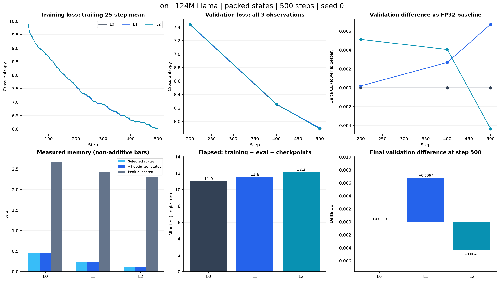
| 配置 | 所选状态精度 | 最终 val loss | Δ loss | 全部状态节省 | 峰值 GiB | 峰值节省 | 分钟 | 耗时变化 |
|---|
| L0 | m=fp32 | 5.896123 | +0.00000 | 0.0% | 2.667 | 0.0% | 11.03 | +0.0% |
| L1 | m=bf16 | 5.902836 | +0.00671 | 50.0% | 2.432 | 8.8% | 11.58 | +5.0% |
| L2 | m=fp8 | 5.891776 | -0.00435 | 74.2% | 2.316 | 13.2% | 12.18 | +10.4% |
signum
FP8 动量；状态收益大，本轮耗时变化较小。
下载 SVG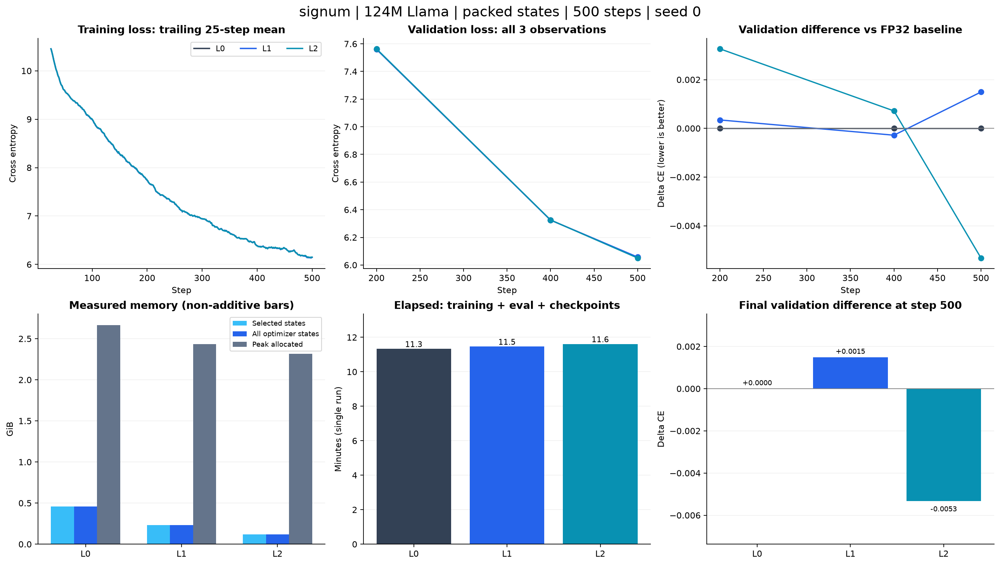
| 配置 | 所选状态精度 | 最终 val loss | Δ loss | 全部状态节省 | 峰值 GiB | 峰值节省 | 分钟 | 耗时变化 |
|---|
| L0 | m=fp32 | 6.055888 | +0.00000 | 0.0% | 2.666 | 0.0% | 11.33 | +0.0% |
| L1 | m=bf16 | 6.057379 | +0.00149 | 50.0% | 2.435 | 8.7% | 11.46 | +1.2% |
| L2 | m=fp8 | 6.050562 | -0.00533 | 74.2% | 2.316 | 13.2% | 11.61 | +2.5% |
cadamw
A3 保留 FP32 二阶状态作机制对照；A6 同时压缩 m/v，三个验证点均更低。
下载 SVG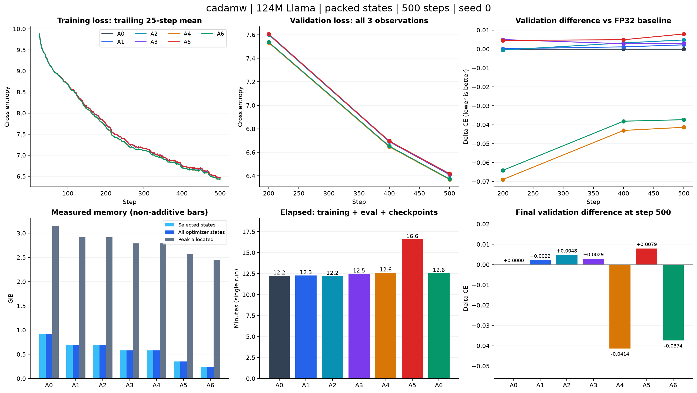
| 配置 | 所选状态精度 | 最终 val loss | Δ loss | 全部状态节省 | 峰值 GiB | 峰值节省 | 分钟 | 耗时变化 |
|---|
| A0 | m=fp32, v=fp32 | 6.410835 | +0.00000 | 0.0% | 3.146 | 0.0% | 12.24 | +0.0% |
| A1 | m=bf16, v=fp32 | 6.413031 | +0.00220 | 25.0% | 2.922 | 7.1% | 12.28 | +0.3% |
| A2 | m=fp32, v=bf16 | 6.415615 | +0.00478 | 25.0% | 2.919 | 7.2% | 12.20 | -0.3% |
| A3 | m=fp8, v=fp32 | 6.413741 | +0.00291 | 37.1% | 2.790 | 11.3% | 12.48 | +2.0% |
| A4 | m=fp32, v=fp8 | 6.369463 | -0.04137 | 37.1% | 2.790 | 11.3% | 12.61 | +3.0% |
| A5 | m=fp8, v=bf16 | 6.418783 | +0.00795 | 62.1% | 2.567 | 18.4% | 16.59 | +35.5% |
| A6 | m=fp8, v=fp8 | 6.373483 | -0.03735 | 74.2% | 2.446 | 22.2% | 12.55 | +2.5% |
adopt
A6 三个验证点均更低；A3 用于隔离动量和二阶状态量化的影响。
下载 SVG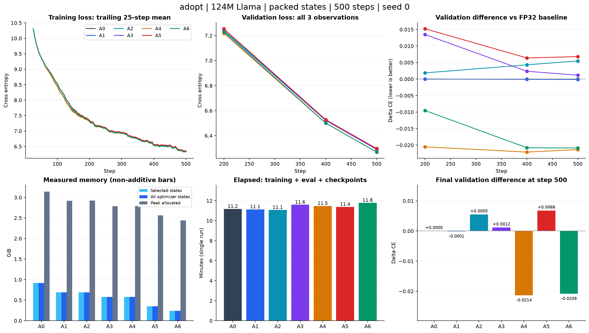
| 配置 | 所选状态精度 | 最终 val loss | Δ loss | 全部状态节省 | 峰值 GiB | 峰值节省 | 分钟 | 耗时变化 |
|---|
| A0 | m=fp32, v=fp32 | 6.290584 | +0.00000 | 0.0% | 3.142 | 0.0% | 11.18 | +0.0% |
| A1 | m=bf16, v=fp32 | 6.290444 | -0.00014 | 25.0% | 2.918 | 7.1% | 11.13 | -0.4% |
| A2 | m=fp32, v=bf16 | 6.296071 | +0.00549 | 25.0% | 2.921 | 7.0% | 11.08 | -0.9% |
| A3 | m=fp8, v=fp32 | 6.291745 | +0.00116 | 37.1% | 2.787 | 11.3% | 11.60 | +3.8% |
| A4 | m=fp32, v=fp8 | 6.269218 | -0.02137 | 37.1% | 2.788 | 11.3% | 11.47 | +2.7% |
| A5 | m=fp8, v=bf16 | 6.297380 | +0.00680 | 62.1% | 2.562 | 18.5% | 11.38 | +1.9% |
| A6 | m=fp8, v=fp8 | 6.269712 | -0.02087 | 74.2% | 2.443 | 22.3% | 11.79 | +5.5% |
ademamix
双 FP8 值得扩展；慢速 EMA 未量化，因此总状态节省约 49.5%。
下载 SVG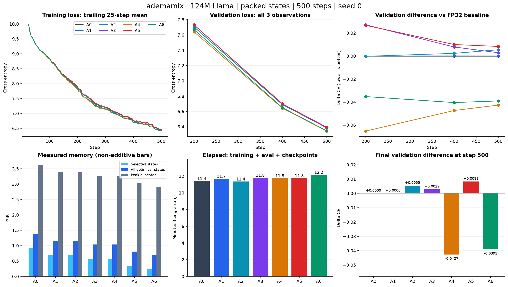
| 配置 | 所选状态精度 | 最终 val loss | Δ loss | 全部状态节省 | 峰值 GiB | 峰值节省 | 分钟 | 耗时变化 |
|---|
| A0 | m=fp32, v=fp32 | 6.385484 | +0.00000 | 0.0% | 3.619 | 0.0% | 11.43 | +0.0% |
| A1 | m=bf16, v=fp32 | 6.385528 | +0.00004 | 16.7% | 3.394 | 6.2% | 11.68 | +2.2% |
| A2 | m=fp32, v=bf16 | 6.390942 | +0.00546 | 16.7% | 3.393 | 6.2% | 11.37 | -0.5% |
| A3 | m=fp8, v=fp32 | 6.388347 | +0.00286 | 24.7% | 3.258 | 10.0% | 11.81 | +3.3% |
| A4 | m=fp32, v=fp8 | 6.342802 | -0.04268 | 24.7% | 3.260 | 9.9% | 11.76 | +2.9% |
| A5 | m=fp8, v=bf16 | 6.393810 | +0.00833 | 41.4% | 3.040 | 16.0% | 11.77 | +3.0% |
| A6 | m=fp8, v=fp8 | 6.346430 | -0.03905 | 49.5% | 2.913 | 19.5% | 12.16 | +6.4% |
adamw-magma
A6 loss 接近或低于对照；本轮耗时增加约 9%，先复测。
下载 SVG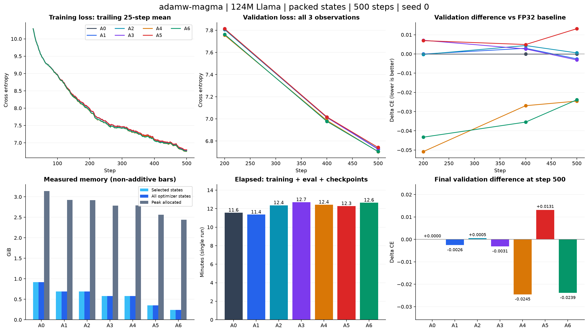
| 配置 | 所选状态精度 | 最终 val loss | Δ loss | 全部状态节省 | 峰值 GiB | 峰值节省 | 分钟 | 耗时变化 |
|---|
| A0 | m=fp32, v=fp32 | 6.728648 | +0.00000 | 0.0% | 3.142 | 0.0% | 11.56 | +0.0% |
| A1 | m=bf16, v=fp32 | 6.726090 | -0.00256 | 25.0% | 2.922 | 7.0% | 11.36 | -1.8% |
| A2 | m=fp32, v=bf16 | 6.729195 | +0.00055 | 25.0% | 2.920 | 7.1% | 12.36 | +6.9% |
| A3 | m=fp8, v=fp32 | 6.725519 | -0.00313 | 37.1% | 2.787 | 11.3% | 12.70 | +9.8% |
| A4 | m=fp32, v=fp8 | 6.704115 | -0.02453 | 37.1% | 2.790 | 11.2% | 12.43 | +7.5% |
| A5 | m=fp8, v=bf16 | 6.741790 | +0.01314 | 62.1% | 2.562 | 18.5% | 12.28 | +6.2% |
| A6 | m=fp8, v=fp8 | 6.704787 | -0.02386 | 74.2% | 2.443 | 22.3% | 12.65 | +9.4% |
sf-adamw
保持 z 为 FP32，仅量化 v；S3/S4 的 z BF16 暂不推进。
下载 SVG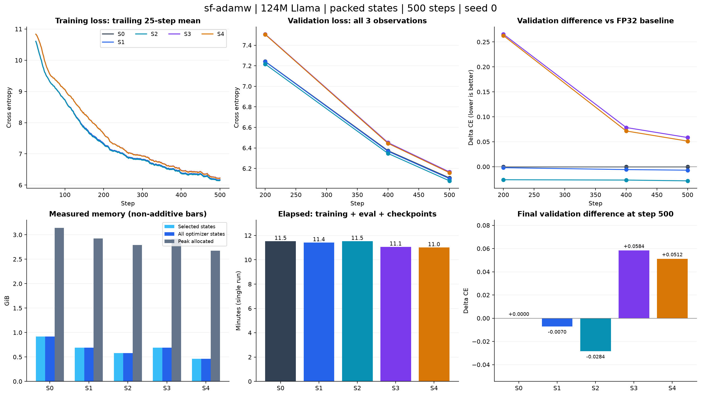
| 配置 | 所选状态精度 | 最终 val loss | Δ loss | 全部状态节省 | 峰值 GiB | 峰值节省 | 分钟 | 耗时变化 |
|---|
| S0 | z=fp32, v=fp32 | 6.107872 | +0.00000 | 0.0% | 3.142 | 0.0% | 11.53 | +0.0% |
| S1 | z=fp32, v=bf16 | 6.100872 | -0.00700 | 25.0% | 2.921 | 7.0% | 11.42 | -0.9% |
| S2 | z=fp32, v=fp8 | 6.079507 | -0.02836 | 37.1% | 2.788 | 11.3% | 11.53 | +0.0% |
| S3 | z=bf16, v=fp32 | 6.166298 | +0.05843 | 25.0% | 2.918 | 7.1% | 11.07 | -4.0% |
| S4 | z=bf16, v=bf16 | 6.159105 | +0.05123 | 50.0% | 2.677 | 14.8% | 11.01 | -4.5% |
prodigy
优先保留 v 的 FP32/BF16；v FP8 的 A4/A6 有一致劣化。
下载 SVG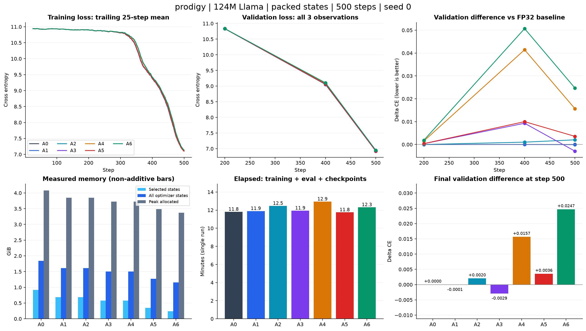
| 配置 | 所选状态精度 | 最终 val loss | Δ loss | 全部状态节省 | 峰值 GiB | 峰值节省 | 分钟 | 耗时变化 |
|---|
| A0 | m=fp32, v=fp32 | 6.924011 | +0.00000 | 0.0% | 4.081 | 0.0% | 11.82 | +0.0% |
| A1 | m=bf16, v=fp32 | 6.923951 | -0.00006 | 12.5% | 3.851 | 5.6% | 11.90 | +0.7% |
| A2 | m=fp32, v=bf16 | 6.926044 | +0.00203 | 12.5% | 3.846 | 5.8% | 12.47 | +5.5% |
| A3 | m=fp8, v=fp32 | 6.921092 | -0.00292 | 18.6% | 3.727 | 8.7% | 11.95 | +1.1% |
| A4 | m=fp32, v=fp8 | 6.939664 | +0.01565 | 18.6% | 3.727 | 8.7% | 12.95 | +9.5% |
| A5 | m=fp8, v=bf16 | 6.927567 | +0.00356 | 31.0% | 3.488 | 14.5% | 11.76 | -0.5% |
| A6 | m=fp8, v=fp8 | 6.948701 | +0.02469 | 37.1% | 3.373 | 17.3% | 12.31 | +4.2% |
mars-adamw
A6 压缩收益较大；A4 在三个验证点均更低，可作 v 量化消融。
下载 SVG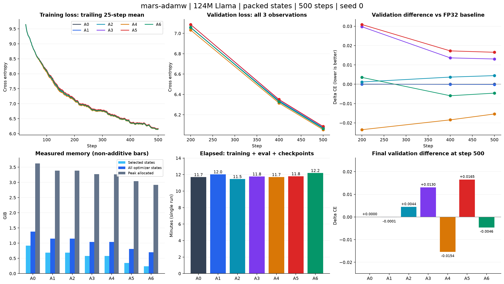
| 配置 | 所选状态精度 | 最终 val loss | Δ loss | 全部状态节省 | 峰值 GiB | 峰值节省 | 分钟 | 耗时变化 |
|---|
| A0 | m=fp32, v=fp32 | 6.068419 | +0.00000 | 0.0% | 3.626 | 0.0% | 11.70 | +0.0% |
| A1 | m=bf16, v=fp32 | 6.068296 | -0.00012 | 16.7% | 3.385 | 6.6% | 12.04 | +2.9% |
| A2 | m=fp32, v=bf16 | 6.072864 | +0.00445 | 16.7% | 3.389 | 6.5% | 11.46 | -2.0% |
| A3 | m=fp8, v=fp32 | 6.081469 | +0.01305 | 24.7% | 3.268 | 9.9% | 11.78 | +0.7% |
| A4 | m=fp32, v=fp8 | 6.053021 | -0.01540 | 24.7% | 3.264 | 10.0% | 11.71 | +0.1% |
| A5 | m=fp8, v=bf16 | 6.084944 | +0.01652 | 41.4% | 3.041 | 16.1% | 11.80 | +0.9% |
| A6 | m=fp8, v=fp8 | 6.063804 | -0.00462 | 49.5% | 2.921 | 19.4% | 12.20 | +4.3% |
mars-lion
FP8 动量可继续；保留的历史梯度及辅助状态限制总显存收益。
下载 SVG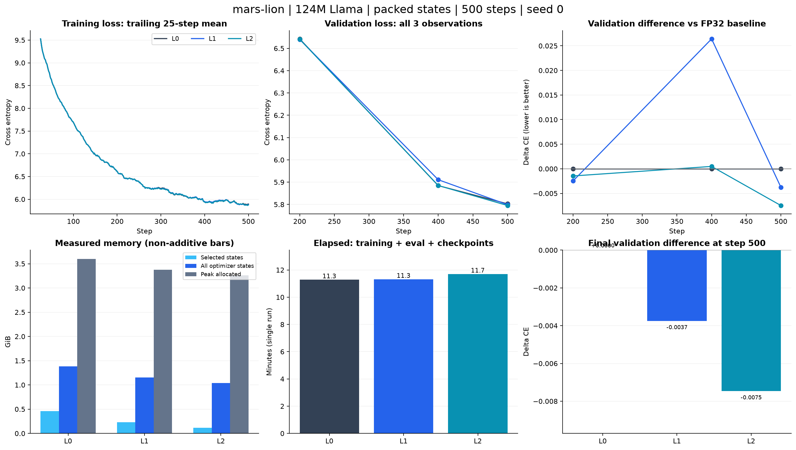
| 配置 | 所选状态精度 | 最终 val loss | Δ loss | 全部状态节省 | 峰值 GiB | 峰值节省 | 分钟 | 耗时变化 |
|---|
| L0 | m=fp32 | 5.802803 | +0.00000 | 0.0% | 3.601 | 0.0% | 11.28 | +0.0% |
| L1 | m=bf16 | 5.799054 | -0.00375 | 16.7% | 3.374 | 6.3% | 11.32 | +0.3% |
| L2 | m=fp8 | 5.795338 | -0.00747 | 24.7% | 3.259 | 9.5% | 11.70 | +3.7% |
mars-shampoo
BF16 接近对照；FP8 在三个验证点均变差，暂缓 L2。
下载 SVG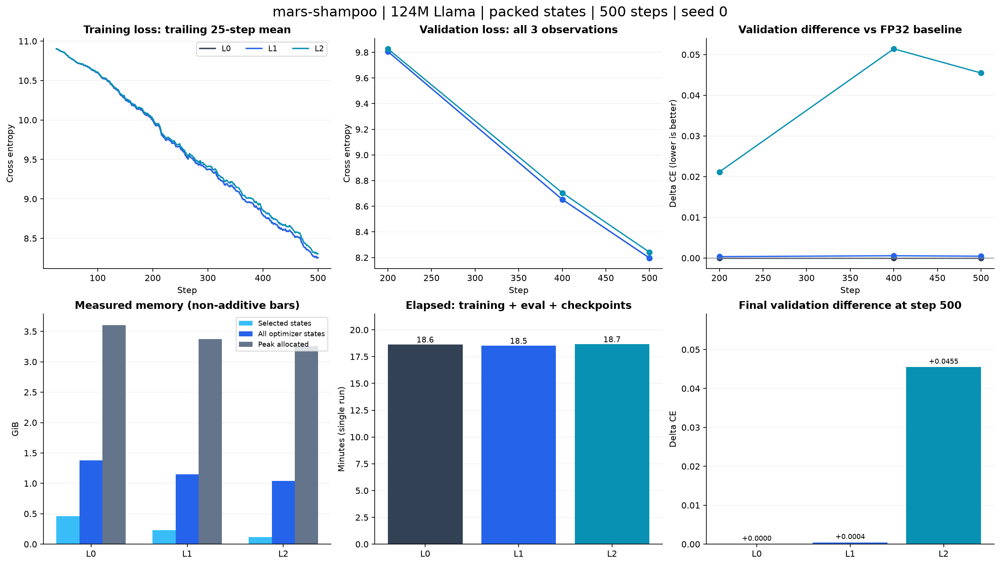
| 配置 | 所选状态精度 | 最终 val loss | Δ loss | 全部状态节省 | 峰值 GiB | 峰值节省 | 分钟 | 耗时变化 |
|---|
| L0 | m=fp32 | 8.196357 | +0.00000 | 0.0% | 3.605 | 0.0% | 18.65 | +0.0% |
| L1 | m=bf16 | 8.196804 | +0.00045 | 16.7% | 3.375 | 6.4% | 18.53 | -0.6% |
| L2 | m=fp8 | 8.241834 | +0.04548 | 24.7% | 3.259 | 9.6% | 18.67 | +0.1% |
sophiag
H6 状态节省大，但量化配置最终 loss 均略高；先过 3000 步。
下载 SVG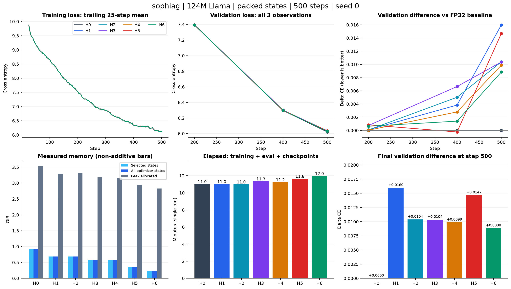
| 配置 | 所选状态精度 | 最终 val loss | Δ loss | 全部状态节省 | 峰值 GiB | 峰值节省 | 分钟 | 耗时变化 |
|---|
| H0 | m=fp32, h=fp32 | 6.020392 | +0.00000 | 0.0% | 3.529 | 0.0% | 11.02 | +0.0% |
| H1 | m=bf16, h=fp32 | 6.036364 | +0.01597 | 25.0% | 3.298 | 6.5% | 11.01 | -0.1% |
| H2 | m=fp32, h=bf16 | 6.030780 | +0.01039 | 25.0% | 3.308 | 6.3% | 10.99 | -0.3% |
| H3 | m=fp8, h=fp32 | 6.030759 | +0.01037 | 37.1% | 3.175 | 10.0% | 11.34 | +2.9% |
| H4 | m=fp32, h=fp8 | 6.030274 | +0.00988 | 37.1% | 3.173 | 10.1% | 11.24 | +2.0% |
| H5 | m=fp8, h=bf16 | 6.035064 | +0.01467 | 62.1% | 2.949 | 16.4% | 11.65 | +5.7% |
| H6 | m=fp8, h=fp8 | 6.029236 | +0.00884 | 74.2% | 2.830 | 19.8% | 11.97 | +8.6% |
muon
BF16 几乎贴合对照；FP8 有小幅偏移，先验证越过 LR warmup。
下载 SVG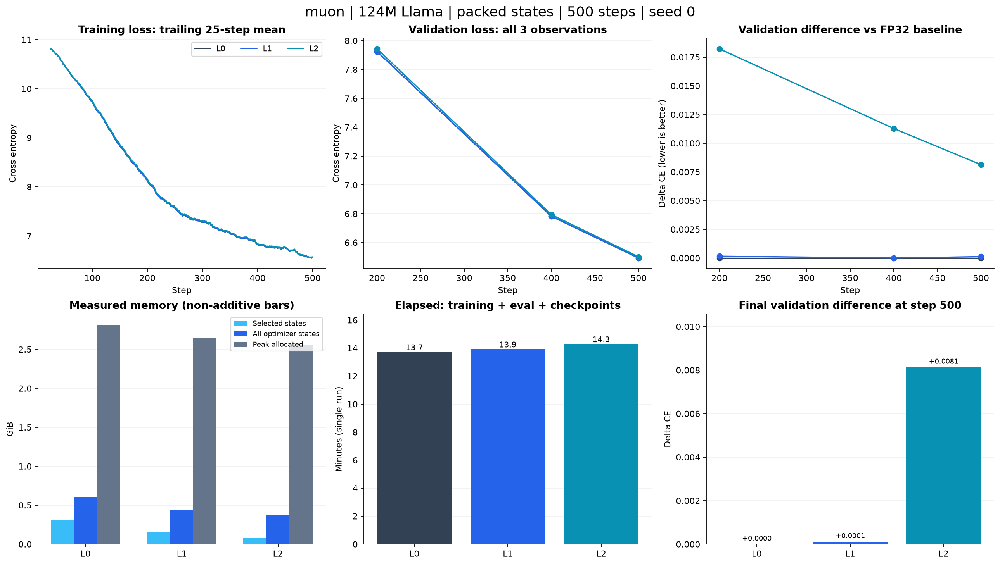
| 配置 | 所选状态精度 | 最终 val loss | Δ loss | 全部状态节省 | 峰值 GiB | 峰值节省 | 分钟 | 耗时变化 |
|---|
| L0 | matrix m=fp32 | 6.492412 | +0.00000 | 0.0% | 2.813 | 0.0% | 13.72 | +0.0% |
| L1 | matrix m=bf16 | 6.492530 | +0.00012 | 26.2% | 2.650 | 5.8% | 13.91 | +1.4% |
| L2 | matrix m=fp8 | 6.500546 | +0.00813 | 38.9% | 2.564 | 8.8% | 14.28 | +4.1% |
d-muon
BF16 接近对照；FP8 的早期劣化更明显，暂作扩展候选。
下载 SVG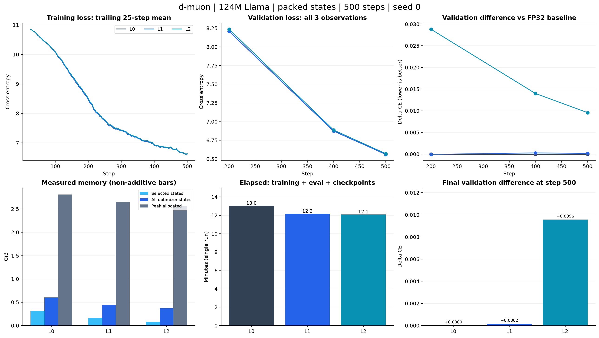
| 配置 | 所选状态精度 | 最终 val loss | Δ loss | 全部状态节省 | 峰值 GiB | 峰值节省 | 分钟 | 耗时变化 |
|---|
| L0 | matrix m=fp32 | 6.561703 | +0.00000 | 0.0% | 2.813 | 0.0% | 13.03 | +0.0% |
| L1 | matrix m=bf16 | 6.561860 | +0.00016 | 26.2% | 2.650 | 5.8% | 12.17 | -6.6% |
| L2 | matrix m=fp8 | 6.571268 | +0.00956 | 38.9% | 2.564 | 8.8% | 12.09 | -7.2% |
muon-magma
BF16 接近对照；FP8 三个验证点均较差，完整训练优先级低。
下载 SVG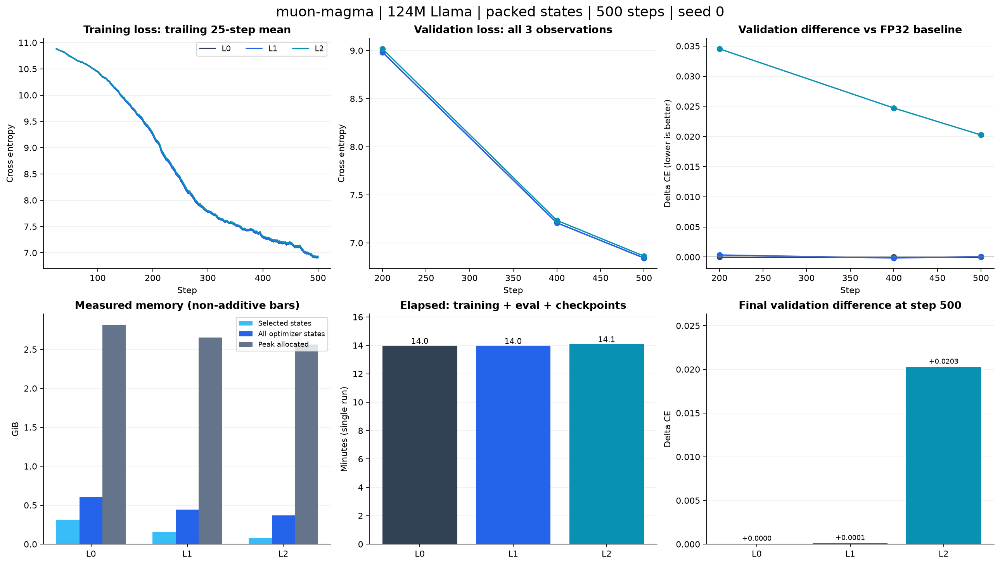
| 配置 | 所选状态精度 | 最终 val loss | Δ loss | 全部状态节省 | 峰值 GiB | 峰值节省 | 分钟 | 耗时变化 |
|---|
| L0 | matrix m=fp32 | 6.843511 | +0.00000 | 0.0% | 2.813 | 0.0% | 13.98 | +0.0% |
| L1 | matrix m=bf16 | 6.843593 | +0.00008 | 26.2% | 2.650 | 5.8% | 13.97 | -0.1% |
| L2 | matrix m=fp8 | 6.863761 | +0.02025 | 38.9% | 2.564 | 8.8% | 14.09 | +0.8% |
softeq-k2000-muon
BF16 接近对照；需跨过第 2000 步算法切换后再确认 FP8。
下载 SVG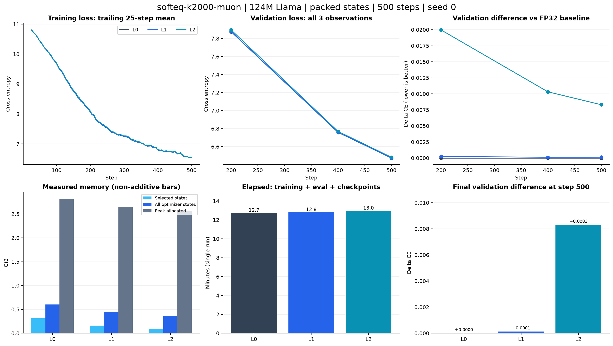
| 配置 | 所选状态精度 | 最终 val loss | Δ loss | 全部状态节省 | 峰值 GiB | 峰值节省 | 分钟 | 耗时变化 |
|---|
| L0 | matrix m=fp32 | 6.472519 | +0.00000 | 0.0% | 2.813 | 0.0% | 12.74 | +0.0% |
| L1 | matrix m=bf16 | 6.472651 | +0.00013 | 26.2% | 2.650 | 5.8% | 12.81 | +0.5% |
| L2 | matrix m=fp8 | 6.480821 | +0.00830 | 38.9% | 2.564 | 8.8% | 12.98 | +1.8% |
soap
优先只量化 m；v FP8 的 A4/A6 有劣化，A5/A6 耗时需复测。
下载 SVG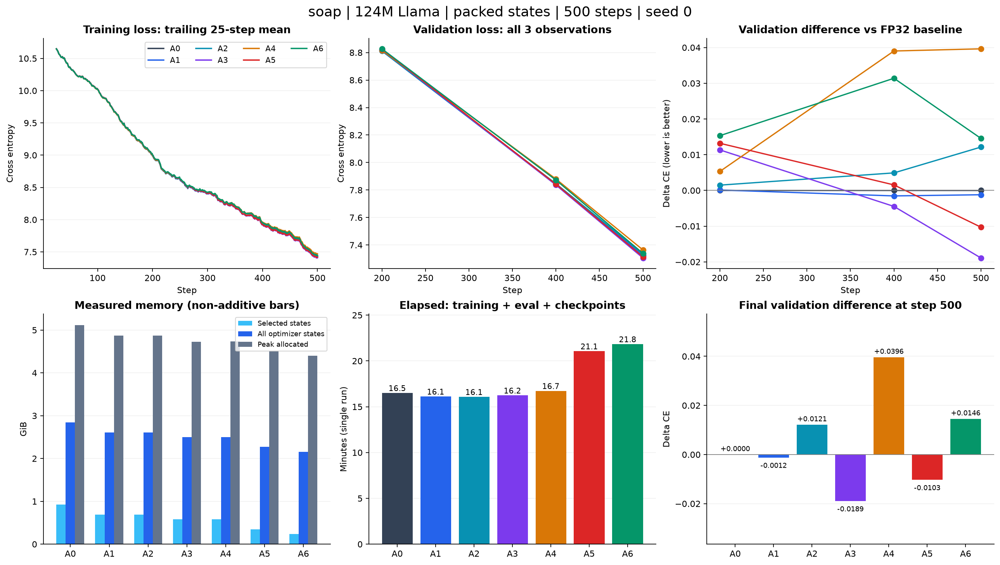
| 配置 | 所选状态精度 | 最终 val loss | Δ loss | 全部状态节省 | 峰值 GiB | 峰值节省 | 分钟 | 耗时变化 |
|---|
| A0 | m=fp32, v=fp32 | 7.324390 | +0.00000 | 0.0% | 5.118 | 0.0% | 16.51 | +0.0% |
| A1 | m=bf16, v=fp32 | 7.323185 | -0.00120 | 8.1% | 4.873 | 4.8% | 16.12 | -2.3% |
| A2 | m=fp32, v=bf16 | 7.336536 | +0.01215 | 8.1% | 4.867 | 4.9% | 16.08 | -2.6% |
| A3 | m=fp8, v=fp32 | 7.305473 | -0.01892 | 12.0% | 4.729 | 7.6% | 16.24 | -1.6% |
| A4 | m=fp32, v=fp8 | 7.364031 | +0.03964 | 12.0% | 4.737 | 7.4% | 16.74 | +1.4% |
| A5 | m=fp8, v=bf16 | 7.314097 | -0.01029 | 20.1% | 4.522 | 11.6% | 21.07 | +27.6% |
| A6 | m=fp8, v=fp8 | 7.338948 | +0.01456 | 24.0% | 4.397 | 14.1% | 21.84 | +32.3% |
newton-muon
BF16 几乎重合；FP8 小幅变差；本轮负耗时增幅不视为加速结论。
下载 SVG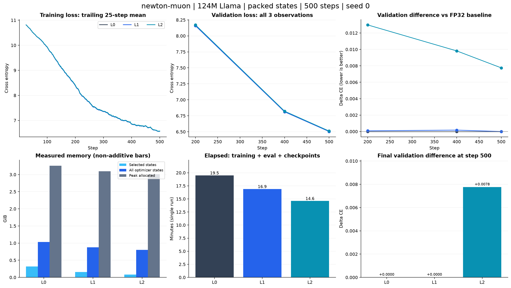
| 配置 | 所选状态精度 | 最终 val loss | Δ loss | 全部状态节省 | 峰值 GiB | 峰值节省 | 分钟 | 耗时变化 |
|---|
| L0 | matrix m=fp32 | 6.503607 | +0.00000 | 0.0% | 3.259 | 0.0% | 19.50 | +0.0% |
| L1 | matrix m=bf16 | 6.503609 | +0.00000 | 15.3% | 3.097 | 5.0% | 16.90 | -13.3% |
| L2 | matrix m=fp8 | 6.511359 | +0.00775 | 22.7% | 3.011 | 7.6% | 14.62 | -25.0% |
协议与下一轮要求
- 模型 123,587,328 参数；权重/梯度 FP32，前向 BF16；每步 16,384 token；同种子、同数据采样。不同优化器的 lr/betas 与更新规则不同，因此只在同优化器内部作量化比较。
- A0=(m32,v32), A1=(mBF16,v32), A2=(m32,vBF16), A3=(mFP8,v32), A4=(m32,vFP8), A5=(mFP8,vBF16), A6=(mFP8,vFP8)。H 系列把 v 换成 Hessian 状态 h；L0/L1/L2 是所选动量 FP32/BF16/FP8；Muon 仅量化矩阵动量，保留 AdamW backup。
- S0=(z32,v32), S1=(z32,vBF16), S2=(z32,vFP8), S3=(zBF16,v32), S4=(zBF16,vBF16)。FP8 E4M3FN、block 128、FP32 scale；numel<4096 的状态保留 FP32。
- 建议第一批保持数据、模型、scheduler、clip 及量化规则一致；新增更大验证集时，全部对照一起评估并写入新协议，不能将新旧验证 loss 混用。单种子完整训练后再用独立种子复核。
- 500 步没有 NaN/退出，只证明本轮工程运行成功；没有记录饱和率/零值率/逐状态量化误差，不能从 loss 推导量化机理。完整训练建议增加这些诊断。
- GN-prox/full 共 14 配置仍未执行；原 AdamW A0/A3 全训练属于独立实验，未混入这 88 条比较。完整训练方案和新实验启动需作为后续任务。